CAD 도면
설계 정보 인식
도면이 바뀌면 E-BOM, M-BOM/ERP, 원가까지 어떤 품목이 영향을 받는지 한 시스템에서 추적합니다.
설계 정보 인식

품목 구조 생성
운영 데이터 연결
의사결정 지원
도면과 부품 변경 이력을 기준으로 검토·승인 흐름을 정리합니다.
EBOM, MBOM, 파생 BOM 차이를 비교해 누락과 변경 범위를 확인합니다.
견적, 단가, 원소재 가격과 연결해 변경의 비용 영향을 추적합니다.
긴 설명보다 실제 화면과 핵심 지표를 먼저 보여주고, 사용자는 자신의 역할에 맞는 관점만 빠르게 확인합니다

전사 KPI, 포트폴리오 성과, 리스크, 원가 영향을 한눈에 파악하여 전략적 의사결정을 빠르고 정확하게 지원합니다.
전사 KPI와 핵심 지표를 실시간으로 모니터링
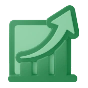
포트폴리오별 진행 현황을 한눈에 파악
리스크 현황과 주요 이슈를 선제적으로 관리
원가 절감 효과와 비용 영향을 정량적으로 분석
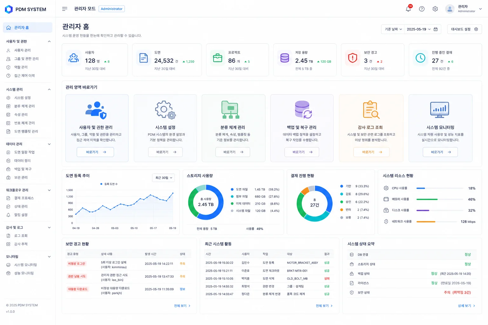
사용자, 데이터, 보안, 시스템 상태까지 전사 운영을 한눈에 파악하고 문제를 선제적으로 감지하여 안정적인 PLM 운영을 지원합니다.
계정·권한·역할을 통합 관리하고 사용 현황을 모니터링
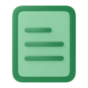
도면 등록·배포·사용 현황을 실시간으로 파악
승인 대기·완료 현황을 확인해 프로세스 지연을 최소화
보안 이상 징후를 탐지하고 위험을 선제적으로 대응
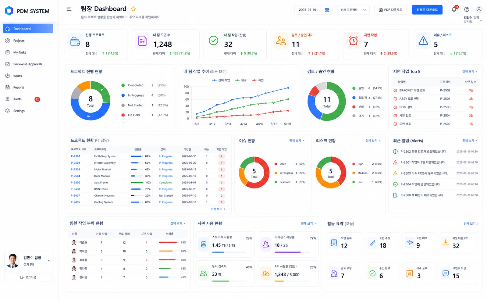
일정, 업무, 변경, 이슈를 한눈에 파악해 지연과 리스크를 사전에 차단하고 팀 성과를 높입니다.
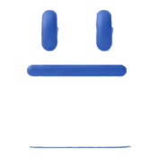
WBS·마일스톤 진행률을 실시간 추적해 일정 지연을 예방
업무 현황과 부하율을 기반으로 적절히 분배해 효율 극대화
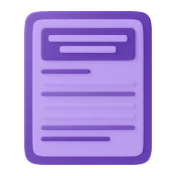
변경 요청·이슈를 통합 관리해 영향도 분석과 결정을 신속 지원
검토·승인 대기와 협업 지표를 모니터링해 원활한 소통 보장
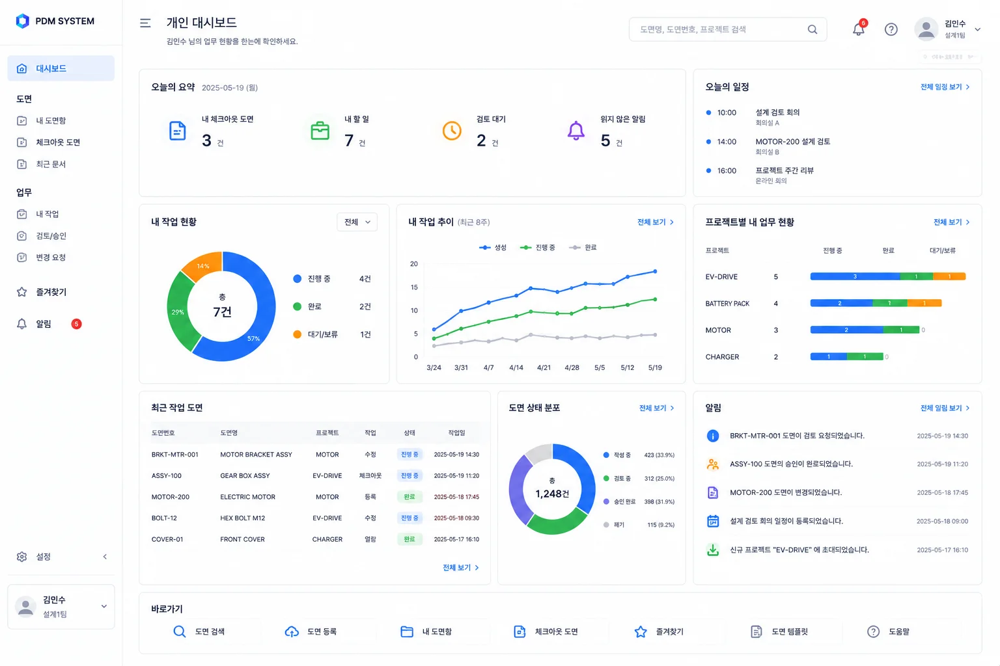
개인에게 필요한 할 일, 결재, 변경 요청, 알림을 통합하여 업무의 흐름과 우선순위를 놓치지 않도록 지원합니다.
나에게 할당된 업무와 기한 임박 항목을 우선 확인
내가 요청한 결재의 진행 상태를 실시간으로 추적

내가 등록·참여한 변경 요청의 진행 상황을 한눈에 확인
중요 알림과 코멘트 등 업무 관련 소식을 빠르게 확인
기능을 나열하기보다 설계 변경이 현장에서 처리되는 순서대로 연결합니다. 각 카드는 담당 부서가 실제로 보는 업무 흐름입니다.
CAD 도면에서 설계 정보를 읽어 BOM 데이터의 시작점을 만듭니다.
도면·문서의 설계변경을 관리하고 결재 흐름으로 통제합니다.
프로젝트 일정과 BOM·원가를 운영 데이터로 이어 관리합니다.
필요한 기능을 제품별로 나누고, 현장 업무에서는 하나의 데이터 흐름으로 연결합니다
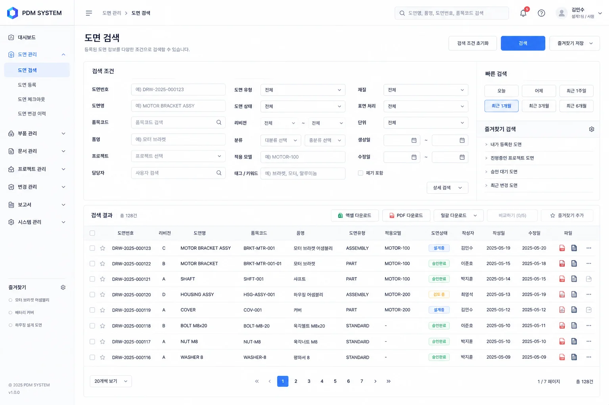
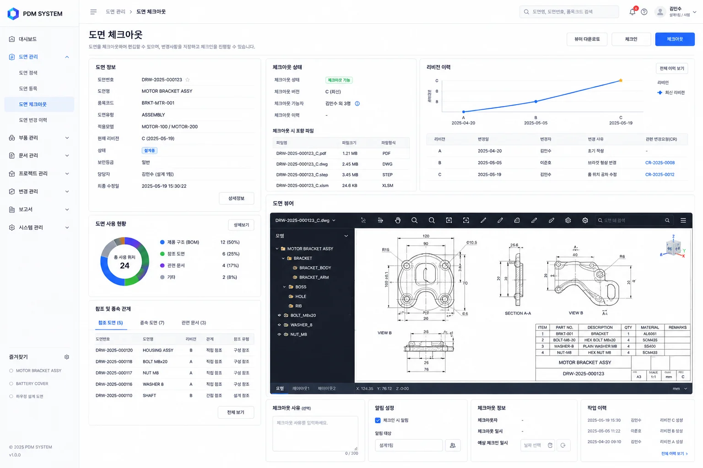
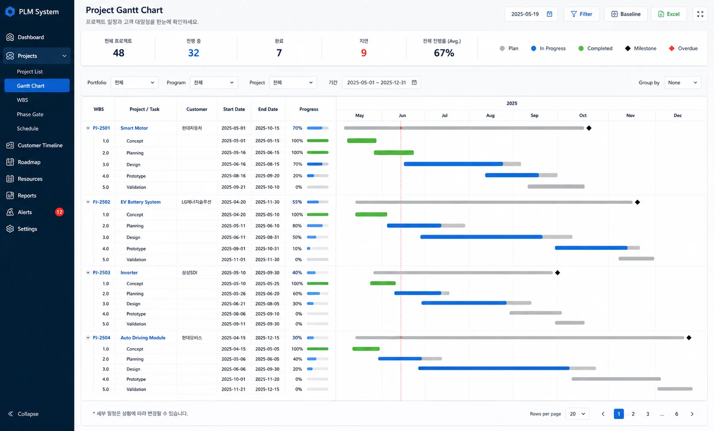
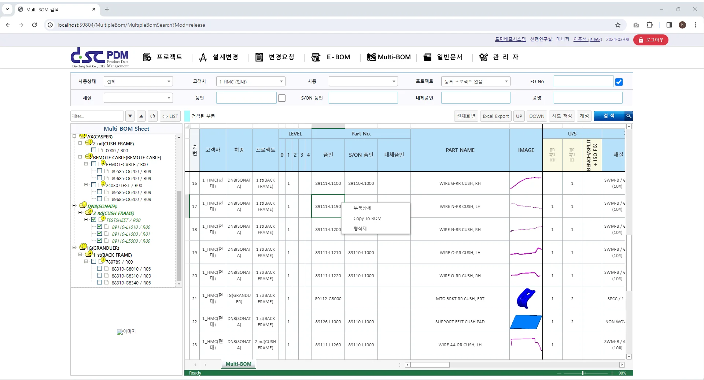
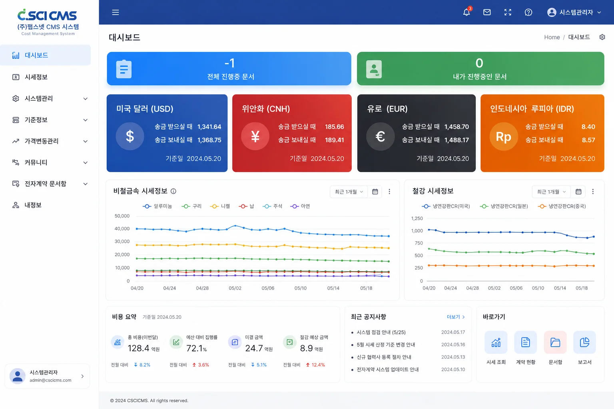
현재 사용 중인 도면·BOM·원가·ERP 업무 흐름을 알려주시면 적합한 도입 범위와 연동 방식을 정리해 드립니다.
업무별 데이터를 연결하고 변경 이력을 남기는 PLM 기능을 제공합니다
설계 데이터가 업무 흐름과 연결될 때,
정합성 있는 의사결정이 가능해집니다.
도면 표제란, 부품 번호, 재질, 치수 정보를 인식해 수작업 입력을 줄이고 디지털 E-BOM 생성을 지원합니다. AI CAD 자동화는 PLM 도입 전 설계 데이터 정리 시간을 줄이는 첫 단계입니다.

형상 인식으로 수천 장에서 유사 도면 즉시 검색.

도면 속성·테이블에서 부품 정보 자동 수집.

Check-in/out으로 Clip PDM에 자동 동기화.

AutoCAD 리본에서 PDM을 바로 실행.

SolidWorks Part·BOM·리비전을 원스톱 연계.

DWG·PDF·STEP 등 중립 포맷 자동 변환.
파일 및 객체 수준 잠금체계를 갖춘 체크인/아웃으로 도면의 주/부버전을 관리합니다. 다중 CAD 연동과 ECR/ECO 프로세스 기반 도면·부품 변경 관리를 지원합니다.
자세히 보기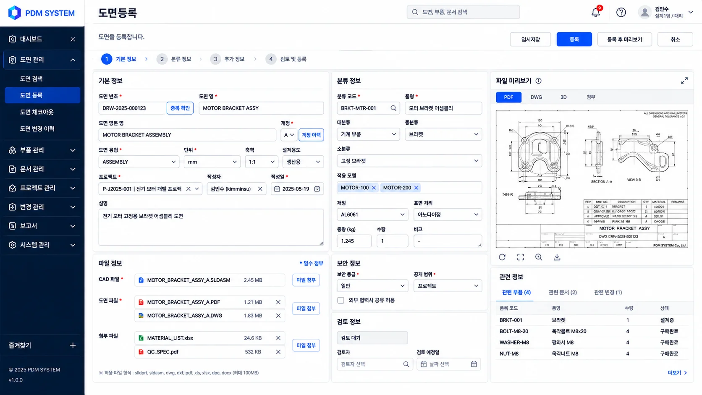
전사 프로젝트 진행 현황, KPI, 알림을 한 화면에서 확인합니다. WBS 기반 일정 관리와 EVMS 방식의 진척률 측정, Gate Review 승인 흐름이 프로젝트 데이터를 경영 관점으로 모아줍니다.
자세히 보기파생 BOM 등 다수의 BOM을 통합 관리하며, 변경 시마다 정전개 및 역전개를 통해 영향 범위를 확인합니다. 임시저장 및 ERP 연동으로 BOM 관리 흐름을 지원합니다.
자세히 보기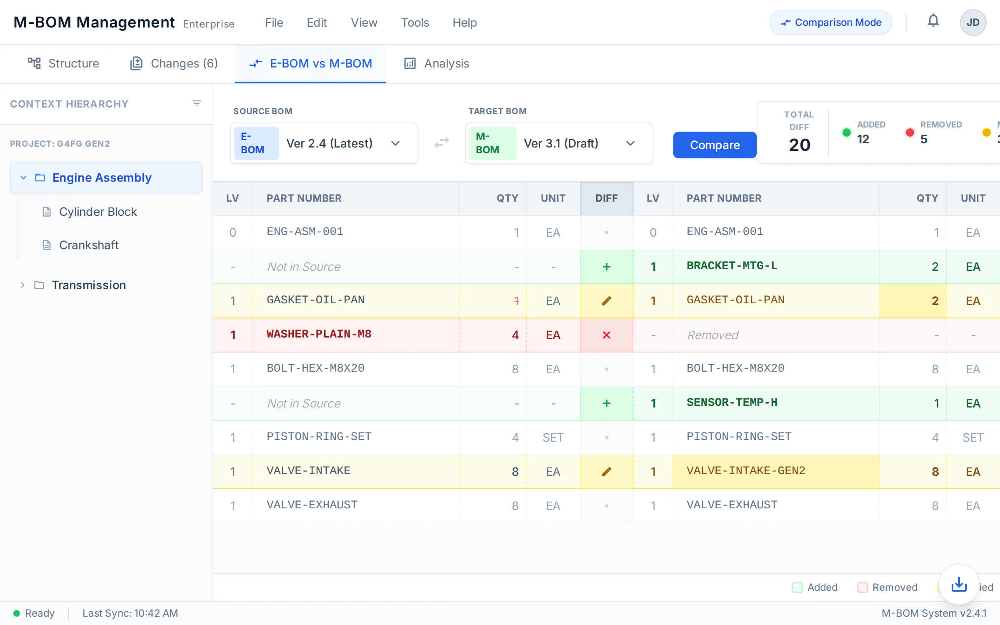
자동차부품 15개사, 반도체·가전 8개사, 의료장비 5개사 등 28개사 구축 경험을 바탕으로 산업별 업무 요건에 대응합니다
IATF 16949 품질경영, 복잡한 BOM 구조 관리, 협력사 데이터 연동
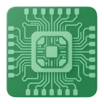
개발 일정 관리, 미세 공정 도면 이력, 원가 변경 추적
ISO 13485 규제 대응, 임상·인증 문서 관리, 설계 이력 추적
전사 PLM, 도면·BOM 관리, 원가관리 구축 경험을 바탕으로 한 고객 사례


SAP 등 ERP와 주요 CAD 환경을 검토해 도면·BOM·원가 데이터가 끊기지 않도록 연동을 구성합니다
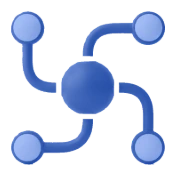
도면, BOM, 변경 요청을 한 업무 흐름에서 확인할 수 있게 합니다.

SAP 등 ERP와 품목, BOM, 원가 데이터 연동을 검토해 구축합니다.
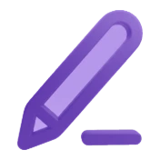
SolidWorks, AutoCAD, CATIA 등 주요 CAD 환경과의 연동을 지원합니다.
표준 기능을 그대로 적용하기보다, 현재 사용 중인 도면·BOM·원가·ERP 흐름을 확인한 뒤 구축 범위와 연동 방식을 함께 정리합니다.
내용을 남겨주시면 담당자가 확인 후 연락드립니다. 급하시면 아래 전화로 바로 상담 가능합니다.
남겨주신 연락처로 담당자가 곧 연락드리겠습니다.
급하신 경우 070-5001-1144로 전화 주세요.